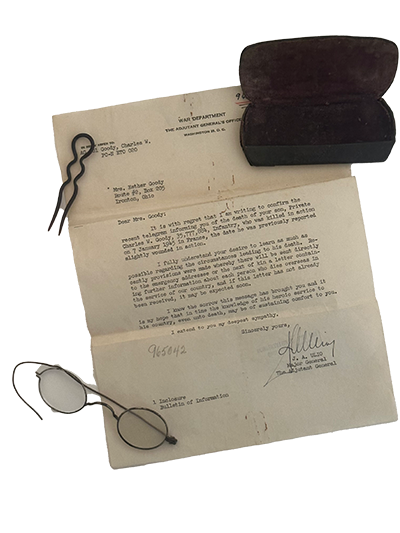
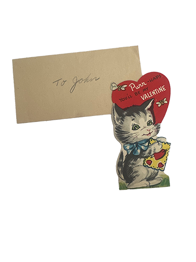

Click camera to time travel


The trunk is full of old photos and documents. Is the trunk and the cameras trying to tell me a story of the past?
The trunk is full of old photos and documents. Is the trunk and the cameras trying to tell me a story of the past?